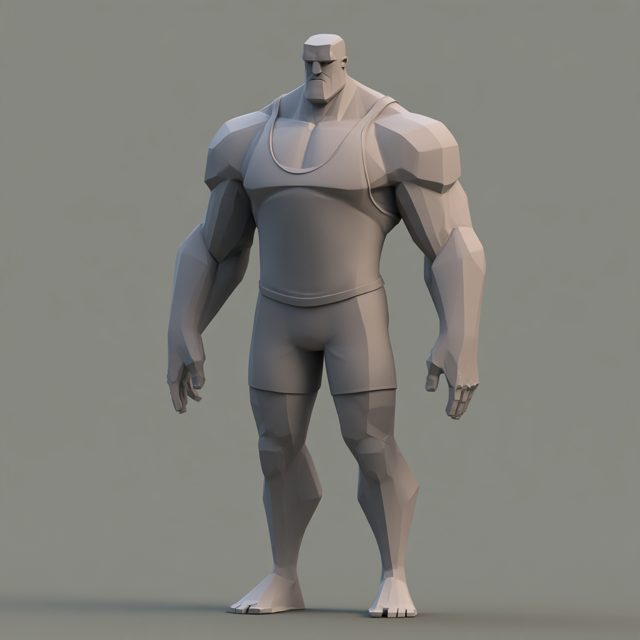
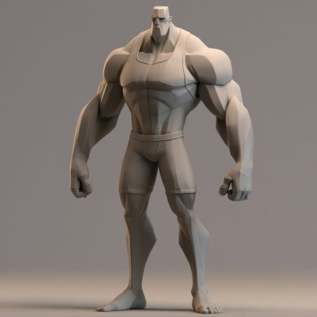
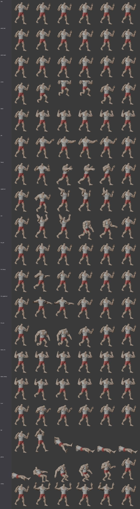
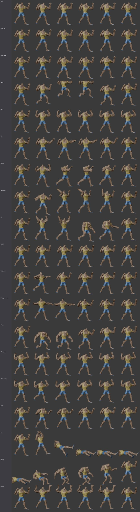

Two epic heroes from Meshy, cleaned up the Bruiser way, painted, rigged on one shared skeleton and given a fighting move set. Every blow has a matching hit and blocked reaction. It's a cartoon brawl in a ranch ring: stars, dust and bonks, never blood. This is the start of a street fighter.
The fight starts with the brutes fighting each other on their own. Press a key or touch the screen and you take over the red one. On a keyboard, A and D walk, W jumps, S blocks, J jabs, K throws a heavy, L throws an uppercut and I swings the two-fisted hammer. On a phone, drag on the left to walk (flick up to jump) and use the fists on the right; the crossed arms block.


Spin either fighter. Meshy gave both of them back plain grey, so the paint is ours: each face of the full 30,000-face Meshy mesh gets a role (skin, tank top, shorts, brows) from the learned body rings, and the colours and shadows are baked down onto the 3,000-face fighter with a warm top light, tinted shadows and a little brush grain.
| Blow | Lands at | Reach | If it hits | If it's blocked |
|---|---|---|---|---|
| Jab (lead fist) | 0.15 s | 1.45 m | Head snaps back (hit_jab) | Guard rocks (block_hit) |
| Heavy (rear straight) | 0.36 s | 1.6 m | Spun and shoved back a step (hit_heavy) | Skids back (block_heavy) |
| Uppercut (rear, rising) | 0.38 s | 1.3 m | Lifted onto his toes, chin up, stagger (hit_uppercut); also hits a jumper | Skids back (block_heavy) |
| Two-fisted hammer | 0.58 s | 1.4 m | Knocked flat (fall, then getup) | Skids back (block_heavy) |
Also on the same skeleton: idle, walk_fwd, walk_back, jump, block, hurt, hit_axe (crushed to one knee, for a hammer that lands while standing), fall, getup and victory (a double-biceps flex). 19 clips per fighter, and both fighters share every clip.


01a167ca and 01a16806, made in the Bruiser study, so no new credits were spent).tools/bruiser-study/scale), and decimate to about 3,000 faces.tools/brute-fight/moves.py, about the body's own axes, become glTF animations. Game data (when each blow lands, its reach and its reactions) ships next to them as moves.json.One command rebuilds both fighters: python3 tools/brute-fight/build.py --sheet (about 20 seconds each). A new brute only needs a Meshy model, its learned rings and a paint line in fighters.json.